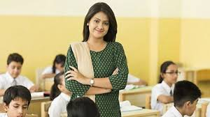

Methodology
"DREAM WORLD"offers a standardized CBSE based curriculum while adding in elements of value that inculcate 21st Century skills like critical thinking and problem solving through interactive events, activities and role playing games in the classrooms. We have been keeping track of the latest teaching methods adopted by the best internationals schools in India. Our curriculum is designed to be thought-provoking, relevant and international in its nature. IPS School is dedicated to providing academic excellence and realizing every student’s potential, both inside and outside the classroom.
Blooming Buds(pre-schoolers)
Every child is a different kind of flower and all together make this world a beautiful garden “If a child cannot learn in the way we teach, we must teach in a way the child can learn” and that is the way we do at dream world. Dream World is above all a happy and vibrant school. We create an atmosphere where children feel valued and secured.
We are committed to give our pupils a solid foundation in a nurturing environment, one that will allow their natural gifts to unfold and make learning a pleasurable experience. It will be our privilege to make your child’s transition at our school, smooth and enjoyable and we look forward to enrich your child’s early learning years with fun and interactive education.
Quality education in the early years of preschool sets a firm foundation in the overall development of a child. At dream world, the nursery curriculum provides a right array of activities to help children move towards achieving their early learning goals.
In Nursery, children are engaged in school readiness activities such as reading, writing, counting, number recognition and problem solving in a fun filled but purposeful manner. Children are encouraged to corroborate their learning through collaborative activities in the areas of dramatics, science and arts.
The transition from preschool to primary school is a crucial time of change for both children as well as their parents. At dream world, the Kindergarten (K.G.) curriculum ensures smooth transition to formal schooling with meaningful and progressive learning experiences.
Initiators
 We facilitate all types of learners, offering individual and extra curricular support. We prepare young people for a world that is constantly changing where they must be able to meet the demands and challenges of an uncertain future.
We try to see that learning process in Primary section becomes more fun than a burden to which they should look forward to. They should be eager and enthusiastic to go to school every morning and at the end of the day be geared to face life beyond the school gate.
We facilitate all types of learners, offering individual and extra curricular support. We prepare young people for a world that is constantly changing where they must be able to meet the demands and challenges of an uncertain future.
We try to see that learning process in Primary section becomes more fun than a burden to which they should look forward to. They should be eager and enthusiastic to go to school every morning and at the end of the day be geared to face life beyond the school gate.
Explorer
At Middle School level, the main focus is on skill based learning integrated with technology which caters to individual learning styles. We believe in whole-child education and constantly look at ways to improve student engagement and maximize student performance on a daily basis.
We provide a quality education in safe and stimulating environment in which every student acquires skills, values and knowledge necessary to become productive members of the ever-changing global community.
Our meticulous planning and pedagogical strategies prepare each child to be independent learners who strive to be successful in life.
Accelerators

Lead through excellence in the realms of academics, culture, sports and social service. Nurture the individual through providing a relevant, integrated learning environment. Develop confidence, self-belief, and the ability to work as part of a team through CCA. Encourage self-control, awareness and motivation, thereby encouraging empathy towards others.
Create a safe, supportive and friendly environment in which justice and equity are seen to prevail. Provide opportunities to exercise initiative and leadership by fully participating in the life of our school. Develop the potential for, and responsibilities of, leadership in areas of social and economic endeavor. Contribute to the future of humanity. For implementing all this at the senior school level, we promote competitive exams like MUN for integral development, NTSE Exam etc through proper coaching, guidance and enrichment programmes.